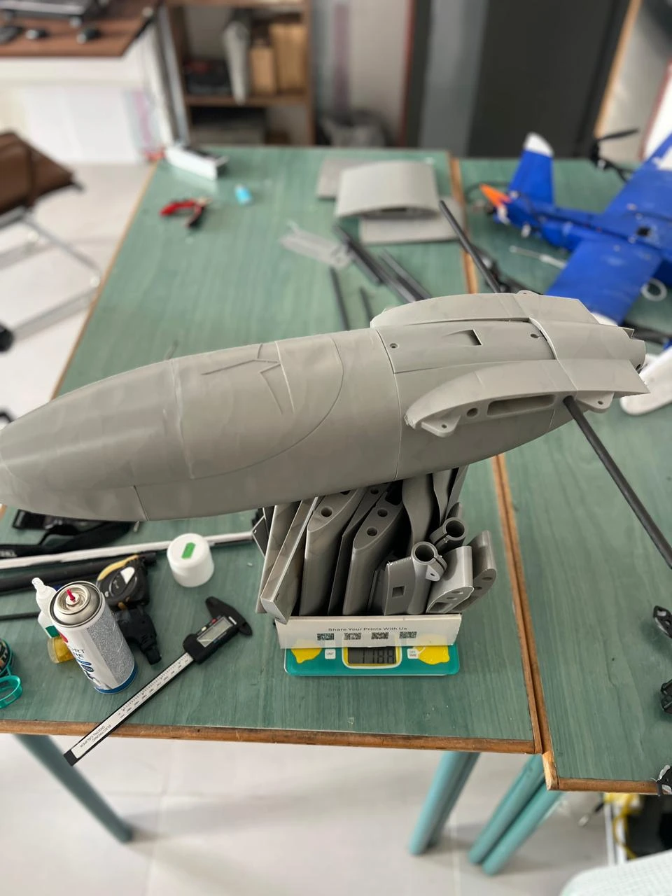
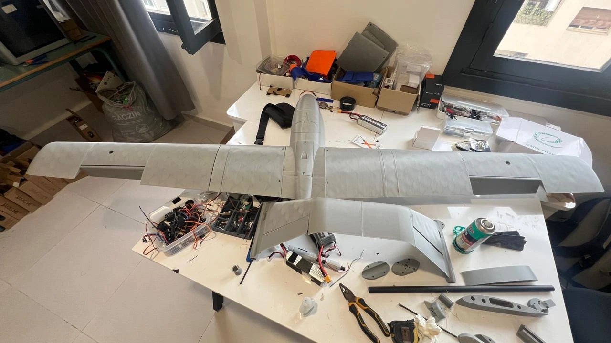
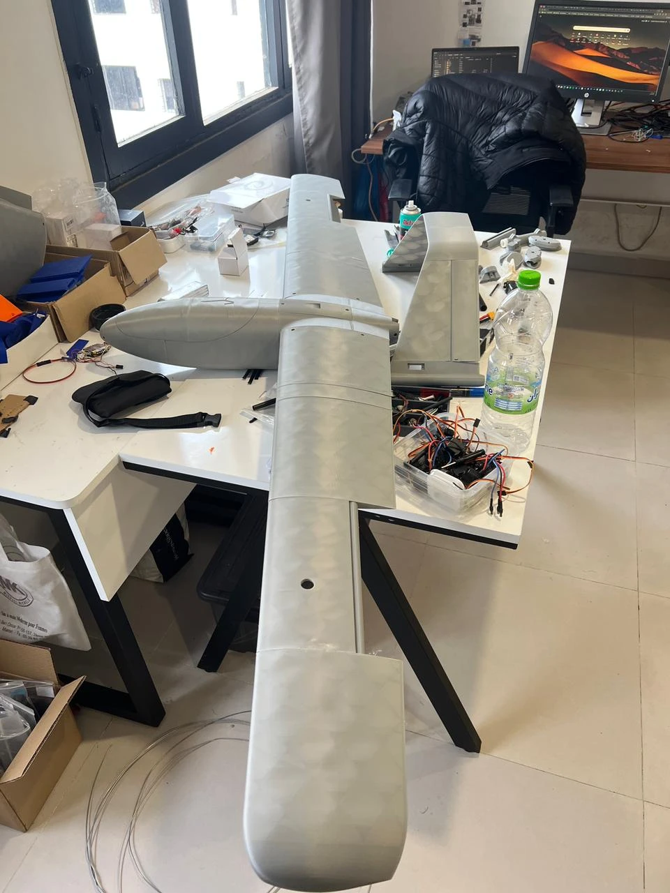
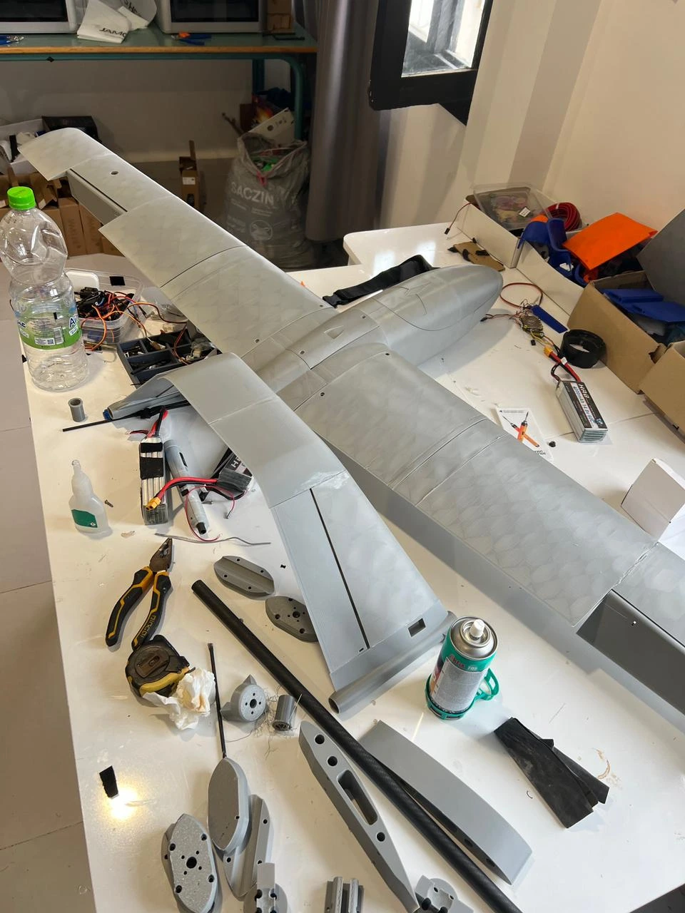

Build the physical interfaces
The Cobra workshop photographs show the airframe and lift-propulsion layout during assembly and integration. I worked on the aircraft as a connected structure, propulsion and avionics system.
Bring that configuration into Gazebo
I also converted the Cobra aircraft files into a custom Gazebo model and connected it to PX4 and ArduPilot. The objective was to explore the configuration and prepare useful checks before field testing.



Keep the images specific
These are Cobra assembly photographs. The separate simulation entry shows its own identified aircraft and software screenshots. A matching view of the custom Cobra simulator model can extend this story when it is available.
Project record
The photographs show physical workshop and assembly stages. The custom-model conversion is confirmed by Achraf; a matching Cobra simulator screenshot can be added when supplied. No flight metric is inferred from the workshop photographs.